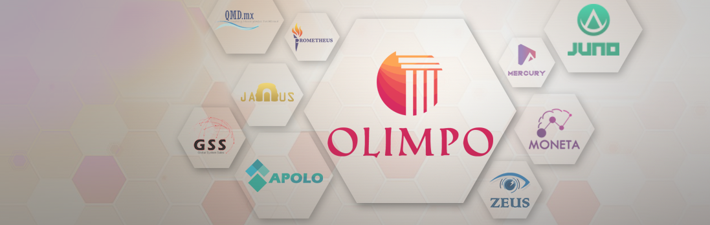

jQuery • .NET • SQL Server
Olimpo
Sistema integral de gestión con módulos para control de inventarios, ventas, facturación y reportes en tiempo real.
Full Stack • Angular • .NET .Desarrollo aplicaciones web limpias, funcionales y mantenibles, siempre buscando soluciones simples y eficientes.
de experiencia
stack principal
Soy desarrollador Full Stack con más de 3 años de experiencia en desarrollo de software de escritorio y
aplicaciones web limpias y funcionales. He trabajado con tecnologías como Angular, WinForms y .NET,
y siempre estoy buscando aprender nuevas herramientas y frameworks.
Me gusta resolver problemas mediante el código, ya sea en el frontend o el backend. Siempre busco
mantener las cosas simples, escribir código legible y mejorar constantemente, aplicando buenas prácticas
y tecnologías actuales.
Sistema integral de gestión con módulos para control de inventarios, ventas, facturación y reportes en tiempo real.
Sistema empresarial enfocado en la gestión financiera, con módulos CRUD para control de datos y generación de proyecciones económicas, permitiendo una planificación más precisa y escalable.
Aplicación web para gestionar equipos de máquinas de hielo y controlar accesos, facilitando el registro, la seguridad y la trazabilidad dentro de entornos empresariales.
Marzo, 2022 – Junio, 2025 • Desarrollo Full Stack, diseño de componentes y optimización de aplicaciones web.
2020 - 2022 • Desarrollo de software de escritorio para pequeñas empresas, automatizando procesos de inventario, ventas y reportes mediante C#, .NET Framework y bases de datos locales.
Estoy abierto a nuevas oportunidades, ya sea para colaborar en proyectos como freelance o para incorporarme a equipos de trabajo de forma profesional. Si tienes una propuesta, una idea o una vacante relacionada con desarrollo web, no dudes en contactarme por los siguientes medios: